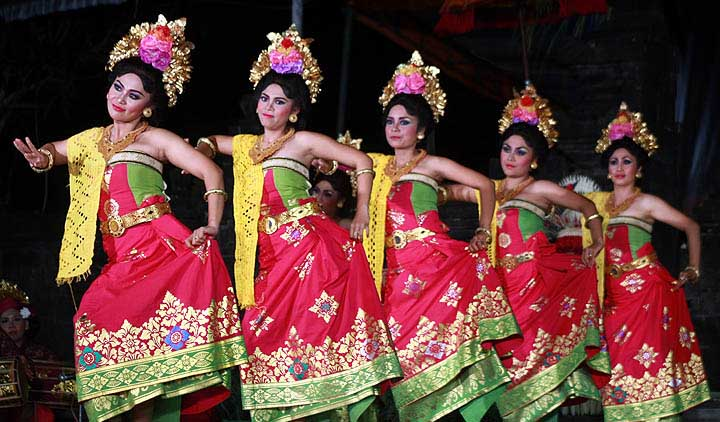
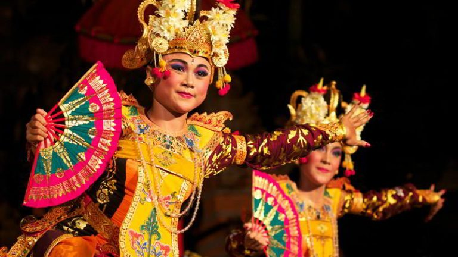
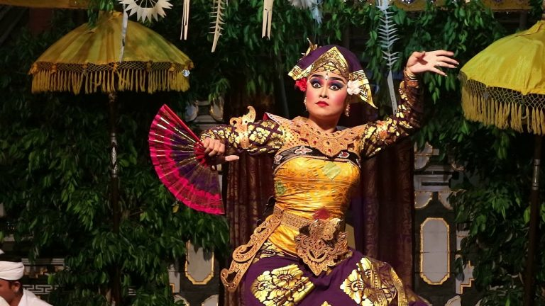

Tari Kecak
Kebanyakan orang tentu sudah mengenal tarian khas Bali yang tidak asing lagi di telinga masyarakat ini. Seperti yang diketahui, tarian ini dilakukan oleh penari pria yang berjumlah puluhan. Penari tersebut melakukan tarian dengan posisi duduk saling melingkar serta menyerukan kata cak secara bersamaan.
Hal tersebut tentu memberikan suasana yang ramai dan mampu membuat penontonnya terkesima. Adapun cerita yang terkandung dalam tari kecak ini adalah tentang Ramayana ketika bertempur dengan Rahwana dan dibantu oleh pasukan kera.
Tarian khas Bali ini sangat sering ditampilkan oleh wisatawan yang hadir di daerah tertentu. Berdasarkan hal tersebut, terdapat wisatawan yang rela berkunjung ke daerah tersebut hanya untuk menyaksikan tarian kecak yang penuh semangat ini.
Tari Pendet
Tarian khas yang berasal dari Bali yang satu ini biasa dilaksanakan di tempat peribadatan umat Hindu sebagai bentuk tarian pemujaan. Tari pendet sendiri diartikan sebagai bentuk penyambutan dari kedatangan Dewa dari langit yang dimainkan oleh penari wanita dengan menggunakan pakaian khas Bali.
Saat ini, tari pendet juga sudah digunakan dalam penyambutan para tamu atau wisatawan yang berkunjung ke Bali.
Tari Puspanjali
Tari khas Bali ini merupakan tarian yang digunakan untuk penyambutan dimana dimainkan oleh penari wanita berjumlah 5 hingga 7 orang yang terinspirasi dari Upacara Rejang.
Dalam upacara tersebut, penari mengenakan pakaian adat khas Bali serta menari untuk menyambut tamu undangan yang hadir. Keindahan dari tari ini dapat membuat wisatawan yang menontonnya merasa terkesima akan gerakan penarinya.
Tari Legong
Penyebutan dari tari ini berasal dari dua kata yaitu “leg” yang berarti luwes dan “gong” yang berarti gamelan khas Bali. Awalnya, tari khas Bali ini hanya ditampilkan di lingkungan keraton saja, akan tetapi saat ini tari legong juga ditampilkan dalam berbagai kegiatan dan acara yang ada di Bali.
Dengan demikian, para wisatawan dapat melihat penari dari legong wanita yang lemah gemulai dan elok dengan membawa kipas serta diiringi alunan gamelan tradisional dari Bali. Tarian ini dapat dibagi menjadi beberapa jenis diantaranya yaitu legong jobog, legong legod bawa, legong keraton, dan legong kuntul.
Tari Pendet
Tarian khas yang berasal dari Bali yang satu ini biasa dilaksanakan di tempat peribadatan umat Hindu sebagai bentuk tarian pemujaan. Tari pendet sendiri diartikan sebagai bentuk penyambutan dari kedatangan Dewa dari langit yang dimainkan oleh penari wanita dengan menggunakan pakaian khas Bali.
Saat ini, tari pendet juga sudah digunakan dalam penyambutan para tamu atau wisatawan yang berkunjung ke Bali.
Tari Trunajaya
Tari trunajaya merupakan tarian khas Bali yang menceritakan tentang kisah romantis yaitu seorang laki-laki yang sedang jatuh hati. Laki-laki dalam kisah tersebut ingin memikat hati sang wanita. Awalnya, tarian khas Bali ini hanya dimainkan oleh satu orang penari laki-laki saja.
Akan tetapi setelah mengalami perkembangan tari trunajaya dilakukan dengan diiringi oleh penari wanita. Hal yang membuat unik dari tari trunajaya adalah gerakan kuda-kuda sambil membelalakkan mata. Hal tersebut dapat diartikan dengan kejantanan dari penari pria yang ingin menyatakan perasaan cintanya.